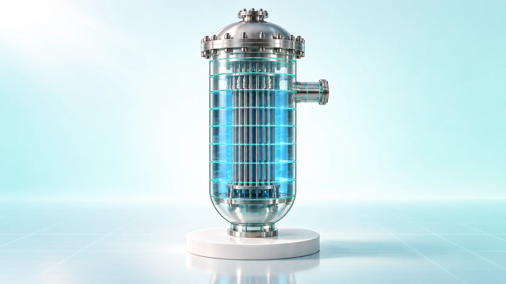
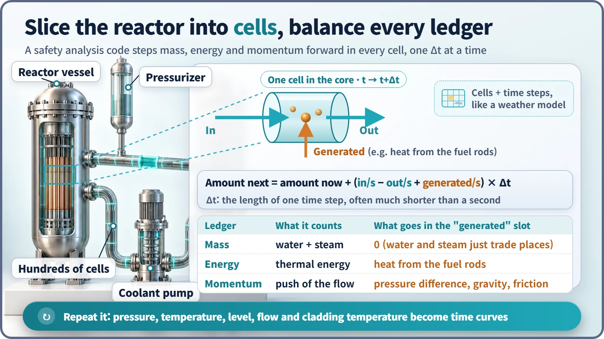
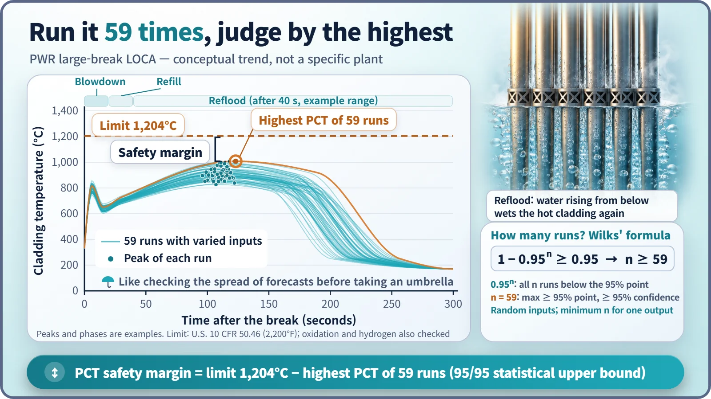

Safety Principles & Accident Analysis · 222
You Can't Crash-Test a Nuclear Plant — What Safety Analysis Codes Actually Calculate
Plants can't be crash-tested, so codes play out assumed accidents step by step. The highest predicted value is checked against the limit, and the gap is the safety margin.

A safety analysis code assumes a failure has happened and calculates, step by tiny step, how pressure, temperature, coolant and flow would change. The highest value on the resulting curves, above all the peak cladding temperature, is compared with a fixed limit, and the gap between them is the safety margin. [1]
A test you can't run
When a new car comes out, the manufacturer drives a perfectly good one into a wall and studies the crumpled body and the crash-test dummies' sensors. Nobody can deliberately cut one of the thick pipes in a finished nuclear plant. Yet before a plant is built, it must show in numbers how hot the fuel would get if such a pipe broke, or it won't be licensed. The way to pass that test is the safety analysis code.
A calculator that plays out "what if"
A safety analysis code is a computer program that assumes a particular failure in a reactor and uses the laws of physics to calculate how pressure, temperature, the amount of coolant and the flow change over time. The results are then held up against acceptance criteria set in advance.
The assumed failure is called an initiating event: a loss-of-coolant accident (LOCA) where a pipe carrying the cooling water breaks, a steam line break, a loss of feedwater. The results fill the accident analysis chapter of the plant's safety analysis report, a key licensing document. [2]
A twin of the weather forecast
A forecast model divides the sky into a huge number of grid cells, writes equations for how much air flows in and out of each cell and how much heat builds up, calculates the state a few minutes later, and repeats. Step by step, it walks into tomorrow.
A safety analysis code does the same. It slices the reactor vessel, pipes, steam generators and pressurizer into hundreds of small cells (control volumes), and in each cell it balances three ledgers: the mass of water and steam, the energy held as heat, and the momentum that pushes and pulls the flow. Every ledger follows one rule:
Amount next = amount now + (in per second − out per second + generated per second) × Δt
Δt is the length of one time step, often much shorter than a second. In the energy ledger, the heat the fuel rods hand to the coolant goes into the "generated" slot; in the mass ledger, water turning into steam doesn't change the total, so nothing is generated. Models for heat conduction in the fuel, heat transfer in boiling water, pumps, valves and the arrival of emergency cooling water are attached on top. Repeat the step countless times and the minutes and hours after an accident appear as curves.

The most nerve-racking point on the curve
Of all the output curves, regulators watch the temperature of the cladding, the metal tube that encases the fuel, most closely, and above all its peak cladding temperature (PCT).
For a LOCA, the U.S. rule 10 CFR 50.46 sets five requirements. South Korea uses the same numerical criteria. [1]
| Criterion | Limit |
|---|---|
| Peak cladding temperature | no more than 1,204°C (2,200°F) |
| Cladding oxidation | no more than 17% of the original thickness |
| Hydrogen generation | no more than 1% of the amount if all cladding reacted |
| Core geometry | remains coolable |
| Long-term cooling | maintained |
The gap between the limit and the peak is the safety margin:
Safety margin = acceptance limit − highest value predicted by the calculation
Oxidation thickness and hydrogen generation are compared with their own limits in the same way.

Pad it generously, or measure precisely and shake it?
The conservative approach, written into U.S. rules in 1974, stacks up deliberately unfavorable assumptions, such as taking decay heat 20% higher than the standard value; if the limits are still met, the plant passes. Best estimate plus uncertainty, allowed since 1988, uses realistic models but nudges the uncertain inputs back and forth over many runs, much like a forecaster running a model many times to produce a chance of rain. [1]
How many runs are enough? Wilks' formula gives the answer:
1 − 0.95ⁿ ≥ 0.95 → n ≥ 59
Vary the inputs randomly, run the calculation 59 times and take the highest of the 59 peak temperatures. With 95% confidence, that value is an upper bound covering at least 95% of possible outcomes. For a single output measure, 59 is the minimum, and that value is compared with 1,204°C. [3]
The conservative approach isn't more accurate, and best estimate isn't optimistic. They are two routes to proving the same thing: that there is margin.
Why trust numbers from a computer?
Codes are validated against experiments. The Korea Atomic Energy Research Institute's ATLAS facility models a Korean reactor design (the APR1400) at 1/2 the height and 1/288 the volume, at real pressures and temperatures. Since 2007 it has staged pipe breaks and other accidents and measured the results; a code earns credibility by how well it reproduces them. [4]
In South Korea, the industry-developed SPACE code was licensed in 2017 and is used to design new plants, while the regulator's technical arm (KINS) checks results independently with a separate code, MARS-KS. [2]
Not to be confused with
Probabilistic safety assessment (PSA) asks how often something happens; a safety analysis code calculates how things change if it does. Core design codes calculate the core's power distribution in normal operation; safety analysis codes look at the whole plant system in accidents and abnormal conditions. CFD resolves the flow in one location on a very fine 3D grid; a safety analysis code covers the whole plant with coarse cells over long periods.
Key takeaways
A forecast tries to predict the rain that will really fall; a safety analysis deliberately assumes the storm we hope never comes and checks that the umbrella is still big enough. Emergency cooling capacity, valve settings and operating limits all rest on these calculations, and the margin is judged by the highest predicted value against a fixed limit.